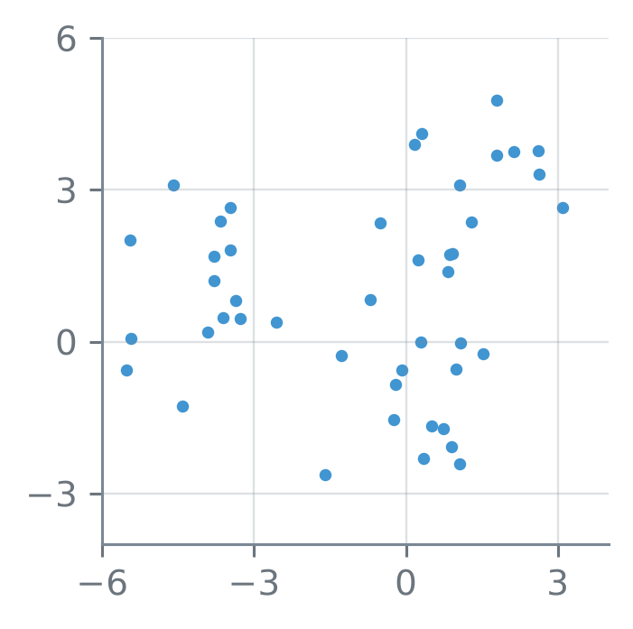
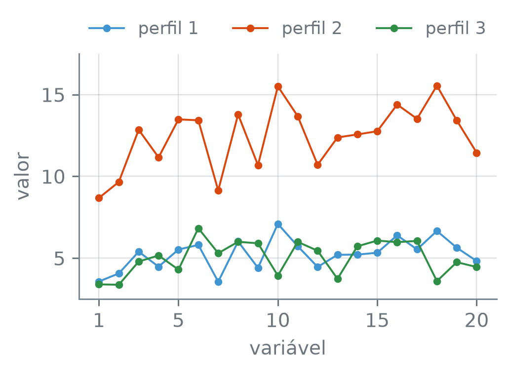

numero_br = lambda v, casas=2: (
f"{v:,.{casas}f}"
.replace(",", "_")
.replace(".", ",")
.replace("_", ".")
.replace("-", "−")
)Clustering Hierárquico
Nota
Esta seção corresponde à seção 12.4.2 de James et al. (2023).
Para dividir observações com o k-means, é preciso dizer antes quantos grupos se quer. Dá para agrupar sem escolher esse número e ver, de uma vez, as divisões em 1, 2, 3, …, até \(n\) grupos? E, se der, qual delas escolher?
A função numero_br escreve os números com a pontuação brasileira:
Lendo um dendrograma
Os dados são 45 pontos simulados no plano, 15 em torno de cada um de três centros:
import numpy as np
import pandas as pd
rng = np.random.default_rng(15)
centros = np.array(
[[-4, 1], [0, -1], [1, 3]])
classe = np.repeat([0, 1, 2], 15)
desvio = rng.normal(size=(45, 2))
X = centros[classe] + desvio
print("forma:", X.shape)forma: (45, 2)Como no k-means, o array classe só constrói os pontos: o método recebe apenas X, e classe fica guardado para conferir o resultado.
import matplotlib.pyplot as plt
fig, ax = plt.subplots(
figsize=(3.4, 2.6))
ax.scatter(X[:, 0], X[:, 1],
s=12, linewidths=0)
ax.set_aspect("equal")
ax.set_xticks([-6, -3, 0, 3])
ax.set_yticks([-3, 0, 3, 6])
plt.show()
X, na mesma escala.
O agrupamento hierárquico (hierarchical clustering) aglomerativo começa com cada observação num grupo só dela e, a cada passo, funde os dois grupos mais parecidos, até sobrar um grupo com todas as observações. A dissimilaridade mede quanto dois grupos diferem, e os mais parecidos são os de menor dissimilaridade. Entre duas observações, a dissimilaridade aqui é a distância euclidiana. O registro das fusões é uma árvore, o dendrograma. O scipy constrói as fusões com a função linkage:
from scipy.cluster.hierarchy \
import linkage
Z = linkage(X, "complete")
print("fusões:", len(Z))
alturas = Z[:, 2]
sobem = np.all(
np.diff(alturas) >= 0)
print("alturas só sobem:",
bool(sobem))
print("as 4 mais altas:")
print(" ", *[numero_br(a)
for a in alturas[-4:]])fusões: 44
alturas só sobem: True
as 4 mais altas:
3,93 4,38 7,89 9,22linkage(X, "complete"), do móduloscipy.cluster.hierarchy— o agrupamento hierárquico das linhas deX, com a distância euclidiana. O"complete"escolhe a regra que mede a dissimilaridade entre dois grupos, a ligação, definida adiante, em “A ligação”. Devolve a matriz de ligação, uma linha por fusão, na ordem em que acontecem: as duas primeiras colunas dizem quais grupos se fundem, a terceira é a altura da fusão, e a quarta, quantas observações tem o grupo novo.Z[:, 2]— a terceira coluna, a das alturas.
Cada fusão junta dois grupos em um, e de 45 grupos até 1 são 44 fusões. A altura de uma fusão é a dissimilaridade entre os dois grupos que se juntam, e aqui ela só sobe de uma fusão para a seguinte: as quatro últimas são as mais altas. As duas últimas, a 7,89 e a 9,22, ficam bem acima das duas anteriores, a 3,93 e a 4,38.
Na figura, a árvore aparece três vezes; a segunda e a terceira têm uma linha tracejada, em 8,5 e em 6. Quantos galhos cada linha atravessa?
from scipy.cluster.hierarchy \
import dendrogram
cortes = [None, 8.5, 6]
# argumentos das três chamadas;
# o ** os passa com seus nomes
opcoes = dict(no_labels=True,
above_threshold_color="0.45")
fig, eixos = plt.subplots(
3, 1, figsize=(3.8, 6.0),
sharex=True)
for ax, h in zip(eixos, cortes):
limiar = 0 if h is None else h
dendrogram(Z, ax=ax,
color_threshold=limiar,
**opcoes)
if h is not None:
ax.axhline(h, ls="--",
color="0.45", lw=1)
ax.set_ylabel("altura")
ax.set_yticks([0, 5, 10])
ax.grid(axis="x",
visible=False)
eixos[0].set_title("sem corte",
fontsize=10)
eixos[1].set_title("corte em 8,5",
fontsize=10)
eixos[2].set_title("corte em 6",
fontsize=10)
plt.tight_layout()
plt.show()![Três dendrogramas iguais, empilhados, cada um com 45 folhas embaixo e a altura, de 0 a 10, no eixo vertical. No de cima, todos os galhos em cinza. A última fusão, no alto, junta um galho da esquerda e um da direita perto da altura 9; logo abaixo, perto da altura 8, o galho da direita se divide em dois. No do meio, uma linha tracejada cinza corta a altura 8,5, e os galhos abaixo dela ficam em duas cores, um grupo de 15 folhas, à esquerda, e um de 30. No de baixo, a linha corta a altura 6, e os galhos ficam em três cores, com 15 folhas cada.](05-clustering-hierarquico_files/figure-html/fig-dendrograma-output-1.png)
dendrogram(Z, ax=ax, ...)— desenha a árvore da matriz de ligaçãoZno gráficoax. Os galhos inteiramente abaixo da alturacolor_thresholdganham a cor do seu grupo, e os demais, a corabove_threshold_color; comcolor_threshold=0, tudo fica nessa cor.no_labels=Trueesconde os números das folhas, que com 45 observações se amontoariam.ax.axhline(h, ...)— uma linha horizontal na alturah, de uma ponta à outra do gráfico;ls="--"a faz tracejada.ax.grid(axis="x", visible=False)— tira as linhas verticais da malha, que no dendrograma não marcam nada.
No dendrograma, cada folha é uma observação, e cada fusão, um traço horizontal que liga dois galhos, na altura dela. Duas observações que se juntam num galho baixo são parecidas; duas que só se juntam perto do topo podem ser muito diferentes.
Um corte horizontal na altura \(h\) divide as observações em grupos: os galhos que o corte atravessa. Quanto mais baixo o corte, mais grupos, de 1 (acima da última fusão) até \(n\) (abaixo da primeira).
Cortando a árvore
Por que cortar em 8,5 e em 6 (2 e 3 grupos)? Qualquer corte entre 7,89 e 9,22 atravessa os mesmos 2 galhos, e qualquer corte entre 4,38 e 7,89, os mesmos 3. O 8,5 e o 6 caem nesses dois intervalos. O de 3 grupos é largo porque a altura salta de 4,38 para 7,89, uma diferença de 3,51. Um salto grande entre fusões seguidas marca um corte natural: abaixo dele, os grupos se formam por fusões baixas, e acima só se juntam grupos bem diferentes.
O corte faz o papel do \(K\) do k-means: decide quantos grupos saem. A diferença é que o corte vem depois, sobre uma árvore já construída, e mudar de ideia não pede rodar nada de novo. O fcluster faz o corte e devolve o grupo de cada observação. Os grupos batem com as três classes da simulação?
from scipy.cluster.hierarchy \
import fcluster
g2 = fcluster(Z, 8.5,
criterion="distance")
g3 = fcluster(Z, 6,
criterion="distance")
print(pd.crosstab(classe, g2,
rownames=["classe"],
colnames=["corte 8,5"]))
print(pd.crosstab(classe, g3,
rownames=["classe"],
colnames=["corte 6"]))
ct = pd.crosstab(g3, g2)
dentro = (ct > 0).sum(axis=1)
print("grupos do 6 dentro do",
"8,5:",
bool((dentro == 1).all()))corte 8,5 1 2
classe
0 0 15
1 0 15
2 15 0
corte 6 1 2 3
classe
0 0 0 15
1 0 15 0
2 15 0 0
grupos do 6 dentro do 8,5: Truefcluster(Z, h, criterion="distance")— corta a árvore na alturahe devolve, para cada observação, o número do grupo em que ela ficou, a partir de 1. Os números são só nomes, como os rótulos do k-means.(ct > 0).sum(axis=1)— em cada linha da tabela cruzada, em quantas colunas há alguma observação: aqui, em quantos grupos do corte de cima caem as observações de cada grupo do corte de baixo.
O corte em 8,5 dá dois grupos: um com toda a classe 2, a nuvem de cima, e outro, de 30, com as classes 0 e 1 juntas. O corte em 6 separa as três classes, uma por grupo. Por que a nuvem de cima se separa antes das outras duas? A resposta depende de como se mede a dissimilaridade entre dois grupos, e volta na parte “A ligação”.
Os grupos do corte mais baixo cabem, cada um, dentro de um grupo do corte mais alto: o corte em 6 só partiu em dois o grupo de 30. Esse encaixe vale para quaisquer dois cortes da mesma árvore, e é dele que vem o nome hierárquico. O encaixe é também um limite.
Imagine pessoas divididas igualmente entre homens e mulheres, e entre brasileiros, japoneses e franceses. A melhor divisão em dois grupos pode ser por sexo, e a melhor em três, por país. Os três grupos de país não cabem dentro dos dois de sexo, e nenhum corte de uma árvore dá as duas divisões. Num caso assim, a árvore acerta no máximo uma das duas, e o k-means, rodado uma vez com \(K = 2\) e outra com \(K = 3\), não tem essa amarra.
O scikit-learn tem o mesmo método, no AgglomerativeClustering. Ele não desenha a árvore, mas devolve os grupos de um corte, dado o número de grupos:
from sklearn.cluster import (
AgglomerativeClustering)
from sklearn.metrics import (
adjusted_rand_score)
ag = AgglomerativeClustering(
n_clusters=3,
linkage="complete")
ag.fit(X)
ari = adjusted_rand_score(
ag.labels_, g3)
print("mesma divisão do corte 6:",
bool(ari == 1))mesma divisão do corte 6: TrueAgglomerativeClustering(n_clusters=3, linkage="complete"), do módulosklearn.cluster— o agrupamento hierárquico, cortado emn_clustersgrupos. O argumentolinkageprecisa ser dado para igualar oscipy: o padrão,"ward", é outra regra.ag.labels_— o grupo de cada observação, a partir de 0.adjusted_rand_score(a, b), o índice de Rand ajustado, do módulosklearn.metrics— compara duas divisões das mesmas observações, sem olhar os nomes dos grupos: vale 1 quando as duas divisões coincidem, e fica perto de 0 quando não têm relação uma com a outra.
Os nomes dos grupos são outros, 0, 1 e 2, em vez de 1, 2 e 3, mas a divisão é a mesma.
Proximidade na horizontal
Numa árvore pequena dá para ver as fusões uma a uma. São nove pontos sorteados no plano, numerados de 1 a 9:
ger = np.random.default_rng(15)
pontos = ger.uniform(
-1.5, 1, size=(9, 2))
Z9 = linkage(pontos, "complete")
arvore = dendrogram(Z9,
no_plot=True)
folhas = np.array(
arvore["leaves"]) + 1
print("folhas, da esquerda à",
"direita:")
print(" ", *folhas)folhas, da esquerda à direita:
2 9 3 4 8 1 6 5 7ger.uniform(-1.5, 1, size=(9, 2))— 9 linhas e 2 colunas de sorteios uniformes entre −1,5 e 1.dendrogram(Z9, no_plot=True)— calcula o desenho sem desenhar; a chave"leaves"traz as observações na ordem das folhas, da esquerda para a direita, contadas a partir de 0. O+ 1as numera de 1 a 9.
As folhas 4 e 8 ficam lado a lado. Isso quer dizer que os pontos 4 e 8 são parecidos? Na árvore, o que diz quão parecidos são dois pontos é a altura em que eles se juntam pela primeira vez. A raiz, a última fusão, junta dois galhos; em qual deles fica cada ponto?
raiz = Z9[-1, 2]
print("altura da raiz:",
numero_br(raiz))
lado = fcluster(Z9, 2,
criterion="maxclust")
for k in [4, 8]:
mesmo = lado == lado[k - 1]
quem = np.flatnonzero(mesmo)
print(f"com o {k}:",
*quem + 1)
fusoes = len(Z9)
print("fusões:", fusoes)
print("desenhos da mesma árvore:",
2 ** fusoes)altura da raiz: 2,34
com o 4: 2 3 4 9
com o 8: 1 5 6 7 8
fusões: 8
desenhos da mesma árvore: 256fcluster(Z9, 2, criterion="maxclust")— corta a árvore na altura que dá 2 grupos, em vez de numa altura dada: os dois galhos que a raiz junta.np.flatnonzero(arr)— as posições em quearréTrue; o+ 1as numera de 1 a 9.
O 4 e o 8 ficam em galhos diferentes da raiz e só se juntam nela, na altura 2,34. Pela árvore, o 4 é tão diferente do 8 quanto do 1, do 5, do 6 e do 7, que estão no mesmo galho que o 8; o 8 fica ao lado dele no desenho por acaso da ordem.
Em cada uma das 8 fusões, os dois galhos podem trocar de lado sem mudar a árvore, o que dá \(2^{8} = 256\) desenhos da mesma árvore. Trocar de lado só os dois galhos da raiz já põe o 8 numa ponta do desenho e o 4 na outra. Quão parecidos são dois pontos se lê no eixo vertical, na altura em que eles se juntam; a ordem das folhas no eixo horizontal é só uma das 256.
cor_pt = np.array(["C0"] * 9)
cor_pt[[3, 7]] = "C1"
fig, (ax1, ax2) = plt.subplots(
2, 1, figsize=(3.8, 5.2),
height_ratios=[1, 1.3])
dendrogram(Z9, ax=ax1,
labels=np.arange(1, 10),
color_threshold=0,
above_threshold_color="0.45",
leaf_font_size=10)
for rot in ax1.get_xticklabels():
k = int(rot.get_text())
rot.set_color(cor_pt[k - 1])
ax1.set_ylabel("altura")
ax1.grid(axis="x", visible=False)
ax2.scatter(pontos[:, 0],
pontos[:, 1], s=30,
c=cor_pt, linewidths=0)
desl = "offset points"
# número acima e à direita do
# ponto; o do 1 vai para baixo,
# para não encostar no 6
lugar = [(5, 3)] * 9
lugar[0] = (-4, -13)
for k in range(9):
x, y = pontos[k]
ax2.annotate(str(k + 1),
(x, y), xytext=lugar[k],
textcoords=desl,
fontsize=10,
color=cor_pt[k])
ax2.set_aspect("equal")
ax2.set_xlim(-1.7, 0.8)
ax2.set_ylim(-1.6, 1.2)
ax2.set_xticks([-1, 0])
ax2.set_yticks([-1, 0, 1])
ax2.set_xlabel("$x_1$")
ax2.set_ylabel("$x_2$")
ax1.set_yticks([0, 1, 2])
plt.tight_layout()
plt.show()
dendrogram(..., labels=np.arange(1, 10), leaf_font_size=10)— escreve, embaixo de cada folha, o número dado emlabels, no tamanholeaf_font_size.ax1.get_xticklabels()— os textos embaixo das folhas;rot.get_text()lê cada um, erot.set_colormuda a cor dele.plt.subplots(..., height_ratios=[1, 1.3])— o gráfico de baixo fica 1,3 vez mais alto que o de cima.
O algoritmo
As fusões seguem um algoritmo curto:
- Comece com as \(n\) observações, cada uma no seu próprio grupo, e com a dissimilaridade de cada par, as \(n(n - 1)/2\) distâncias euclidianas, por exemplo.
- Enquanto houver mais de um grupo:
- Entre todos os pares de grupos, ache os dois menos dissimilares e funda-os num só. A dissimilaridade entre eles é a altura da fusão no dendrograma.
- Calcule a dissimilaridade entre o grupo novo e cada um dos outros.
Quais pontos se juntam nas primeiras fusões dos nove pontos, e a que altura? As quatro primeiras linhas de Z9 respondem, e a quinta mostra o que acontece depois:
print("fusão: pontos · altura")
for f in range(4):
a, b, h, _ = Z9[f]
i, j = int(a) + 1, int(b) + 1
print(f"{f + 1}.ª:", i, "e",
j, "·", numero_br(h))
a, b = Z9[4, :2]
print("5.ª, na matriz:", int(a),
"e", int(b))fusão: pontos · altura
1.ª: 1 e 6 · 0,23
2.ª: 5 e 7 · 0,26
3.ª: 2 e 9 · 0,48
4.ª: 3 e 4 · 0,62
5.ª, na matriz: 9 e 10Na matriz, as observações são numeradas de 0 a 8, e o + 1 as põe de 1 a 9. A partir de 9, um número indica um grupo formado antes: 9 é o grupo da 1.ª fusão, 10 o da 2.ª, e assim por diante.
As primeiras fusões juntam pares de pontos próximos, 1 e 6 primeiro e 5 e 7 logo depois. A quinta junta os grupos 9 e 10, isto é, \(\{1, 6\}\) e \(\{5, 7\}\), dois grupos de dois pontos.
O passo 2(b) esconde uma decisão: a dissimilaridade entre duas observações é a distância entre elas, mas qual é a dissimilaridade entre o grupo \(\{1, 6\}\) e o grupo \(\{5, 7\}\)?
A ligação
A ligação (linkage) define a dissimilaridade entre dois grupos \(A\) e \(B\) a partir das distâncias dos pares com uma observação de \(A\) e uma de \(B\). As quatro mais usadas:
| Ligação | Dissimilaridade |
|---|---|
| completa | maior distância entre pares |
| simples | menor distância entre pares |
| média | distância média entre pares |
| centroide | distância entre o centroide de \(A\) e o de \(B\) |
Com \(A = \{1, 6\}\) e \(B = \{5, 7\}\), há quatro pares com um ponto de cada grupo. Quanto vale a dissimilaridade entre os dois grupos em cada ligação?
from sklearn.metrics import (
pairwise_distances)
A = pontos[[0, 5]]
B = pontos[[4, 6]]
d = pairwise_distances(A, B)
print("completa:",
numero_br(d.max()))
print("simples: ",
numero_br(d.min()))
print("média: ",
numero_br(d.mean()))
cA = A.mean(axis=0)
cB = B.mean(axis=0)
dc = np.sqrt(((cA - cB)**2).sum())
print("centroide:",
numero_br(dc))
igual = np.isclose(d.max(),
Z9[4, 2])
print("completa = 5.ª fusão:",
bool(igual))completa: 0,88
simples: 0,47
média: 0,67
centroide: 0,66
completa = 5.ª fusão: Truepairwise_distances(A, B)— com dois argumentos, as distâncias entre cada linha deAe cada linha deB: aqui, uma tabela 2 × 2, os quatro pares com um ponto de cada grupo.pontos[[0, 5]]— as linhas 0 e 5 do array, os pontos 1 e 6.np.sqrt(v)— a raiz quadrada de cada elemento dev; aqui, da soma dos quadrados das diferenças entre as coordenadas dos dois centroides, a distância euclidiana entre eles.
Os dois grupos estão a 0,88 pela ligação completa, que olha o par mais afastado, e a 0,47 pela simples, que olha o mais próximo; a média e a centroide ficam no meio. A ligação completa dá a altura da quinta fusão da árvore, porque foi com ela que a árvore foi construída.
A ligação explica o corte em 8,5 dos 45 pontos, que deixou a classe 2 sozinha. Entre cada par de classes, a que distância ficam os pontos mais afastados, e os centroides?
pares = [(0, 1), (1, 2), (0, 2)]
print("classes: completa",
"· centroide")
for a, b in pares:
Xa = X[classe == a]
Xb = X[classe == b]
dab = pairwise_distances(
Xa, Xb)
ca = Xa.mean(axis=0)
cb = Xb.mean(axis=0)
dc = np.sqrt(
((ca - cb)**2).sum())
print(f"{a} e {b}:",
numero_br(dab.max()), "·",
numero_br(dc))classes: completa · centroide
0 e 1: 7,89 · 4,73
1 e 2: 8,15 · 4,15
0 e 2: 9,22 · 5,64Pelos centroides, as classes 1 e 2 estão mais perto uma da outra, a 4,15, do que as classes 0 e 1, a 4,73. Pelo par mais afastado, que é o que a ligação completa olha, a ordem se inverte: 7,89 entre 0 e 1 e 8,15 entre 1 e 2. Por isso a árvore junta primeiro as classes 0 e 1, na fusão de altura 7,89, e o corte em 8,5 deixa a classe 2 sozinha. O 9,22 entre as classes 0 e 2 é a altura da raiz.
Com outra ligação, as distâncias entre grupos mudam, e as fusões e a árvore também. Nos 45 pontos, com o corte em três grupos, as quatro ligações dão os mesmos tamanhos?
ligacoes = ["complete",
"average", "single",
"centroid"]
print("ligação: tamanhos")
for m in ligacoes:
Zm = linkage(X, m)
g = fcluster(Zm, 3,
criterion="maxclust")
cont = np.bincount(g)[1:]
tam = np.sort(cont)
print(f" {m}:", *tam)
Zc = linkage(X, "centroid")
sobe = np.all(
np.diff(Zc[:, 2]) >= 0)
print("centroide, alturas só",
"sobem:", bool(sobe))ligação: tamanhos
complete: 15 15 15
average: 15 15 15
single: 1 3 41
centroid: 15 15 15
centroide, alturas só sobem: Falselinkage(X, m)— o segundo argumento escolhe a ligação:"complete"(completa),"average"(média),"single"(simples) ou"centroid"(centroide).np.bincount(g)[1:]— o[1:]descarta a contagem do 0, que ofclusternão usa como nome de grupo.
A completa, a média e a centroide dão três grupos de 15. A simples dá um grupo de 41, um de 3 e um de 1. Ela junta os grupos pelo par mais próximo, e, quanto mais pontos um grupo tem, mais chance de um deles estar perto de alguém de fora: o grupo grande cresce encadeado (chaining), e o corte deixa de fora só uns poucos pontos.
A centroide tem outro defeito. Numa fusão, o centroide do grupo novo pode ficar mais perto de um terceiro grupo do que os dois grupos estavam um do outro, e a fusão seguinte sai mais baixa que a anterior: é uma inversão, e o False impresso acima mostra que ela acontece nos 45 pontos. Num dendrograma, uma fusão assim fica abaixo de uma das fusões que ela junta, e a leitura pela altura deixa de valer. Por isso a centroide exige cuidado na leitura da árvore, embora seja comum em genômica. Entre as outras, preferem-se a completa e a média, que evitam o encadeamento extremo da simples e tendem a dar grupos de tamanhos mais parecidos.
As amostras do NCI60
A tabela NCI60 tem a expressão de milhares de genes em amostras de células de câncer. Com os genes padronizados, as ligações completa, média e simples, cortadas em 4 grupos, dividem as amostras do mesmo jeito?
from sklearn.preprocessing \
import StandardScaler
nci = pd.read_csv(
"dados/NCI60.csv.gz")
tipo = nci["tipo"]
genes = nci.drop(columns="tipo")
print("forma:", genes.shape)
padronizador = StandardScaler()
padr = padronizador.fit_transform(
genes)
arvores = {}
print("ligação: tamanhos")
for m in ligacoes[:3]:
arvores[m] = linkage(padr, m)
g = fcluster(arvores[m], 4,
criterion="maxclust")
cont = np.bincount(g)[1:]
tam = np.sort(cont)
print(f" {m}:", *tam)forma: (64, 6830)
ligação: tamanhos
complete: 7 8 9 40
average: 1 1 8 54
single: 1 1 1 61São 64 amostras e 6.830 genes. As três árvores dividem as mesmas amostras de jeitos bem diferentes. O maior grupo tem 40 amostras na completa, 54 na média e 61 na simples.
Na simples, os outros três grupos têm uma amostra cada, e a média também deixa duas amostras sozinhas, cada uma num grupo de 1. A média fica entre as duas, mais equilibrada que a simples, menos que a completa.
O encadeamento se vê nas fusões. Quando uma amostra sozinha se junta ao maior grupo, ele cresce uma amostra. Em quantas fusões o maior grupo cresce, e em quantas delas o que entra é uma amostra sozinha?
n = len(padr)
print("maior grupo cresce · com")
print("uma amostra sozinha:")
for m in ligacoes[:3]:
Zm = arvores[m]
# tamanho do maior grupo
# depois de cada fusão
maior = np.maximum.accumulate(
Zm[:, 3])
cresce = np.diff(maior,
prepend=1) > 0
# números < n: amostra sozinha
lados = Zm[:, :2] < n
sos = lados.sum(axis=1)
uma = cresce & (sos == 1)
print(f" {m}:", cresce.sum(),
"·", uma.sum())maior grupo cresce · com
uma amostra sozinha:
complete: 14 · 2
average: 19 · 8
single: 39 · 30np.maximum.accumulate(v)— em cada posição, o maior valor devaté ali.np.diff(maior, prepend=1)põe um 1, o tamanho de todo grupo antes da primeira fusão, antes de tirar as diferenças.
Na simples, o maior grupo cresce em 39 fusões, 30 delas por uma amostra sozinha: o grupo grande se forma, na maior parte das vezes, uma amostra por vez. Na média, uma amostra sozinha faz o maior grupo crescer em 8 fusões, e na completa, em 2. Nos dendrogramas, com o corte em 4 grupos:
nomes = {"complete": "completa",
"average": "média",
"single": "simples"}
# cinza com 55% de opacidade
claro = "#7373738C"
apagado = dict(opcoes,
above_threshold_color=claro)
fig, eixos = plt.subplots(
3, 1, figsize=(3.8, 6.6))
for ax, m in zip(eixos,
ligacoes[:3]):
Zm = arvores[m]
corte = (Zm[-4, 2]
+ Zm[-3, 2]) / 2
dendrogram(Zm, ax=ax,
color_threshold=corte,
**apagado)
for traco in ax.collections:
traco.set_linewidth(0.8)
ax.axhline(corte, ls="--",
color="0.45", lw=1.2,
zorder=3)
ax.set_title(nomes[m],
fontsize=10)
ax.set_ylabel("altura")
ax.grid(axis="x",
visible=False)
plt.tight_layout()
plt.show()![Três dendrogramas empilhados, com uma linha tracejada cinza-escura em cada um, desenhada por cima dos galhos; acima da linha, os galhos são de um cinza esmaecido, e abaixo dela, coloridos por grupo. No de cima, da ligação completa, há quatro grupos coloridos, cada um com várias folhas. No do meio, da ligação média, um grupo colorido grande, um menor e duas folhas sozinhas, presas direto a galhos esmaecidos. No de baixo, da ligação simples, um grupo colorido com quase todas as folhas e três folhas sozinhas, presas a galhos esmaecidos.](05-clustering-hierarquico_files/figure-html/fig-nci-ligacoes-output-1.png)
NCI60, com os genes padronizados e a distância euclidiana, pelas ligações completa, média e simples. A linha tracejada corta cada árvore em 4 grupos; os galhos abaixo dela têm a cor do seu grupo, e os de cima, em cinza esmaecido, ficam atrás da linha. As alturas não se comparam de um gráfico para outro: cada ligação mede a distância entre grupos de um jeito.
(Zm[-4, 2] + Zm[-3, 2]) / 2— a altura no meio entre a quarta e a terceira fusões mais altas. Depois das fusões até a quarta mais alta, sobram 4 grupos; o corte nessa altura os separa.ax.collections— os conjuntos de traços do gráfico: odendrogramdesenha os galhos de cada cor como um conjunto.traco.set_linewidth(0.8)afina os traços, que com 64 folhas se amontoariam."#7373738C"— uma cor em hexadecimal: os seis primeiros dígitos são o cinza, e os dois últimos, a opacidade, 55%.dict(opcoes, ...)copiaopcoescom a cor dos galhos acima do corte trocada por essa.
Os grupos da ligação completa têm relação com o tipo de câncer? Na coluna tipo, que não entrou no agrupamento, os rótulos terminados em -repro são medições repetidas de duas linhagens, a K562, de leucemia, e a MCF7, de mama, e desconhecido é uma amostra de origem não identificada. As seis fusões mais altas, e os saltos entre cada uma e a de baixo, mostram onde a árvore sugere cortar; o corte em 140 dá 4 grupos, e a tabela cruzada os compara com tipo.
completa = arvores["complete"]
print("fusões mais altas:")
for k in range(1, 7):
h = completa[-k, 2]
print(f" {k}.ª:",
numero_br(h, 1))
# salto k: altura da k.ª menos
# a da (k + 1).ª
# alturas como impressas
altas = completa[-6:, 2].round(1)
saltos = np.diff(altas)[::-1]
print("saltos, da 1.ª à 5.ª:")
print(" ", *[numero_br(s, 1)
for s in saltos])
em_ordem = np.sort(saltos)[::-1]
print("em ordem:",
*[numero_br(s, 1)
for s in em_ordem])
g4 = fcluster(completa, 140,
criterion="distance")
print("grupos no corte 140:",
len(np.unique(g4)))
g_max = fcluster(completa, 4,
criterion="maxclust")
mesma = adjusted_rand_score(
g4, g_max) == 1
print("os do corte em 4 grupos:",
bool(mesma))
tab = pd.crosstab(tipo, g4,
colnames=["grupo"])
print(tab)fusões mais altas:
1.ª: 163,5
2.ª: 144,1
3.ª: 142,4
4.ª: 138,7
5.ª: 132,3
6.ª: 132,0
saltos, da 1.ª à 5.ª:
19,4 1,7 3,7 6,4 0,3
em ordem: 19,4 6,4 3,7 1,7 0,3
grupos no corte 140: 4
os do corte em 4 grupos: True
grupo 1 2 3 4
tipo
K562A-repro 0 0 0 1
K562B-repro 0 0 0 1
MCF7A-repro 0 0 1 0
MCF7D-repro 0 0 1 0
SNC 2 3 0 0
cólon 0 2 5 0
desconhecido 0 1 0 0
leucemia 0 0 0 6
mama 3 2 2 0
melanoma 0 8 0 0
ovário 0 6 0 0
próstata 0 2 0 0
pulmão 1 8 0 0
rim 1 8 0 0O 140 cai entre a 4.ª e a 3.ª fusões mais altas, a 138,7 e a 142,4, e dá os mesmos 4 grupos do corte em 4. O maior salto, 19,4, três vezes o seguinte, é o da última fusão, de 144,1 para 163,5, e um corte nele dá 2 grupos. O seguinte, 6,4, entre a 5.ª e a 4.ª, daria 5. O 4 não cai num salto: entre a 4.ª e a 3.ª, a diferença é de 3,7. Ele é uma escolha de quem analisa, feita aqui para comparar os grupos com tipo.
A tabela tem uma linha por tipo, e os números das colunas são só nomes. Onde caem a leucemia, o melanoma e a mama?
leu = tab.loc["leucemia"]
g_leu = leu.idxmax()
col = tab[g_leu]
print("leucemia no mesmo grupo:",
leu.max(), "de", leu.sum())
print("o grupo tem:",
col.sum(), "amostras")
outros = col[col > 0].index
print(" ", *outros)
mel = tab.loc["melanoma"]
g_mel = mel.idxmax()
col = tab[g_mel]
print("melanoma no mesmo grupo:",
mel.max(), "de", mel.sum())
print(" tamanho do grupo:",
col.sum())
print(" tipos no grupo:",
(col > 0).sum())
mama = tab.loc["mama"]
print("grupos com mama:",
(mama > 0).sum())leucemia no mesmo grupo: 6 de 6
o grupo tem: 8 amostras
K562A-repro K562B-repro leucemia
melanoma no mesmo grupo: 8 de 8
tamanho do grupo: 40
tipos no grupo: 9
grupos com mama: 3tab[g_leu]— a coluna desse grupo, com quantas amostras de cada tipo ele tem;col[col > 0].index, os tipos que aparecem nele.
As 6 amostras de leucemia ficam num grupo de 8, com apenas mais duas: as medições repetidas da K562, também de leucemia.
As 8 de melanoma ficam todas no grupo de 40, mas esse grupo junta 9 tipos da coluna tipo. As de mama se espalham por 3 grupos. O agrupamento, que não viu a coluna tipo, junta a leucemia num grupo e mistura os tipos nos outros.
A medida de dissimilaridade
Até aqui, a dissimilaridade entre duas observações foi a distância euclidiana. Uma loja virtual agrupa seus clientes pelo número de compras de cada produto. Dois clientes compram os mesmos produtos, um em grande volume e o outro pouco. Eles são parecidos? Pela distância euclidiana, os valores de um ficam longe dos do outro, e ela tende a juntar os clientes que compram pouco, seja o que for que comprem.
Três perfis simulados, com \(p = 20\) variáveis, põem a mesma pergunta. O perfil 2 tem a mesma forma do perfil 1, em outro nível e com o dobro da amplitude; o perfil 3 fica no nível do 1, com outra forma. Qual dos dois é mais parecido com o perfil 1?
ger = np.random.default_rng(15)
base = ger.normal(size=20)
ruido = ger.normal(size=20)
obs1 = 5 + base
obs2 = 12 + 2 * base + 0.3 * ruido
obs3 = 5 + ger.normal(size=20)
P = np.vstack([obs1, obs2, obs3])
print("forma:", P.shape)forma: (3, 20)np.vstack([obs1, obs2, obs3])— empilha os três perfis como as linhas de uma tabela 3 × 20.
var = np.arange(1, 21)
fig, ax = plt.subplots(
figsize=(3.8, 2.8))
for k, cor in enumerate(
["C0", "C1", "C2"]):
ax.plot(var, P[k], "o-",
color=cor, markersize=3,
linewidth=1,
label=f"perfil {k + 1}")
ax.set_xlabel("variável")
ax.set_ylabel("valor")
ax.set_xticks([1, 5, 10, 15, 20])
ax.set_yticks([5, 10, 15])
ax.set_xlim(0, 21)
ax.legend(ncol=3, fontsize=9,
loc="lower center",
bbox_to_anchor=(0.5, 1),
frameon=False)
plt.tight_layout()
plt.show()
ax.plot(..., label=...)eax.legend(...)— cada linha recebe um nome, e a legenda os mostra;ncol=3põe os três lado a lado, ebbox_to_anchor=(0.5, 1)comloc="lower center"a coloca acima do gráfico, fora da área dos dados.
A resposta depende do que se quer que “parecido” signifique. A distância baseada em correlação trata como parecidas duas observações cujos valores sobem e descem juntos ao longo das variáveis, mesmo que estejam em níveis diferentes. É um uso incomum da correlação: em vez de correlacionar duas variáveis ao longo das observações, correlaciona duas observações, o perfil de cada uma, ao longo das \(p\) variáveis. A distância é \(1 - r\), em que \(r\) é essa correlação. Quanto vale cada medida entre os três perfis?
d_eu = pairwise_distances(P)
d_co = pairwise_distances(P,
metric="correlation")
print("par: euclidiana · 1 − r")
for a, b in [(0, 1), (0, 2),
(1, 2)]:
e = numero_br(d_eu[a, b])
c = numero_br(d_co[a, b], 3)
print(f"{a + 1} e {b + 1}:",
e, "·", c)par: euclidiana · 1 − r
1 e 2: 32,48 · 0,012
1 e 3: 5,83 · 0,863
2 e 3: 34,28 · 0,827pairwise_distances(P, metric="correlation")— commetric="correlation", \(1 - r\) entre cada par de linhas no lugar da distância euclidiana, com \(r\) a correlação entre os 20 valores de uma linha e os 20 da outra.
Pela distância euclidiana, o perfil 1 fica perto do 3, a 5,83, e longe do 2, a 32,48. Pela correlação, é o contrário: \(1 - r\) vale 0,012 entre 1 e 2 e 0,863 entre 1 e 3. Na loja, com a correlação, os clientes que compram os mesmos produtos ficam juntos, em volume grande ou pequeno.
As duas medidas se ligam. Se o perfil de cada observação for padronizado, com média 0 e desvio padrão 1 nas suas \(p\) variáveis, as duas dão a mesma ordem entre os pares: \(1 - r\) é igual à distância euclidiana ao quadrado dividida por \(2p\), com o desvio padrão calculado com divisor \(p\). Vale nos estados do USArrests? As quatro variáveis de lá têm unidades diferentes, e padronizar cada estado ao longo delas não é uma boa prática para agrupar: aqui, a padronização por linha serve só para conferir a igualdade.
prisoes = pd.read_csv(
"dados/USArrests.csv",
index_col="estado")
T = prisoes.to_numpy()
print("forma:", T.shape)
media = T.mean(axis=1,
keepdims=True)
dp = T.std(axis=1,
keepdims=True)
Tp = (T - media) / dp
d2 = pairwise_distances(Tp)**2
um_r = pairwise_distances(Tp,
metric="correlation")
p = T.shape[1]
print("1 − r = d² / (2p):",
bool(np.allclose(um_r,
d2 / (2 * p))))forma: (50, 4)
1 − r = d² / (2p): TrueT.mean(axis=1, keepdims=True)— a média de cada linha, e não de cada coluna;keepdims=Truea mantém como coluna, 50 × 1, para a subtração valer linha a linha.T.std(axis=1, ...), do mesmo jeito, o desvio padrão de cada linha, com divisor \(p\).
São 50 estados e \(p = 4\) variáveis. A distância baseada em correlação é o quadrado da distância euclidiana dividido por \(2p\), depois de tirar de cada perfil o seu nível e a sua amplitude. É o que ela ignora nos perfis 1 e 2.
No NCI60, a ligação completa com a distância baseada em correlação, cortada em 4 grupos, divide as amostras como a distância euclidiana?
Zr = linkage(padr, "complete",
metric="correlation")
g4r = fcluster(Zr, 4,
criterion="maxclust")
cont = np.bincount(g4r)[1:]
print("tamanhos:", *np.sort(cont))
ari = adjusted_rand_score(g4,
g4r)
print("comparada à euclidiana:",
numero_br(ari, 3))
leu = g4r[tipo == "leucemia"]
print("leucemia num grupo só:",
len(np.unique(leu)) == 1)tamanhos: 12 14 14 24
comparada à euclidiana: 0,186
leucemia num grupo só: Truelinkage(padr, "complete", metric="correlation")— a mesma ligação completa, com \(1 - r\) entre as linhas no lugar da distância euclidiana.
Com a correlação, os tamanhos dos grupos mudam, e o índice de Rand ajustado entre as duas divisões dá 0,186, bem mais perto de 0 que de 1: as duas medidas dividem as amostras de jeitos diferentes. As 6 de leucemia continuam juntas num grupo.
Uma única árvore dá as divisões aninhadas em qualquer número de grupos, de 1 a \(n\), e o número se escolhe depois, pela altura do corte; um salto grande nas alturas é indicação, não regra. A árvore depende da ligação e da medida de dissimilaridade, escolhidas antes, e o corte, como o \(K\) do k-means, fica com quem analisa.
James, Gareth, Daniela Witten, Trevor Hastie, Robert Tibshirani, e Jonathan Taylor. 2023. An Introduction to Statistical Learning with Applications in Python. Springer.